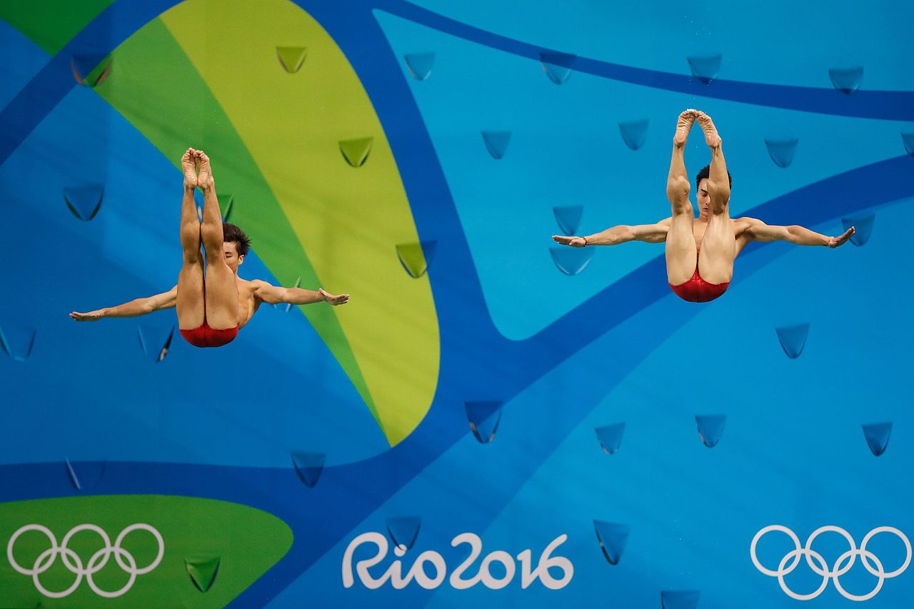
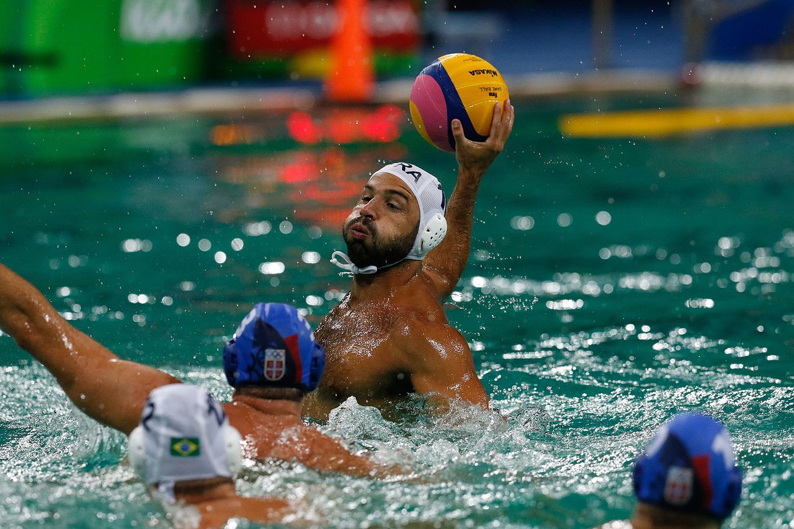

Esportes Aquáticos

Natação
A natação é um dos esportes mais tradicionais das olimpíadas,sendo instalada na primeira edição olímpica em 1896 na Grécia em Atenas e a feminina instalada em 1912 em Estocolmo na Suécia.

Saltos Ornamentais
Os saltos ornamentais estão nas olimpíadas desde 1904 nos jogos olímpicos de Sant-Louis e o feminino em 1912 em Estocolmo. É um esporte individual que tem como objetivo as manobras e a execução dos saltos.

Polo aquático
O polo aquático foi o primeiro jogo em equipe a ser instalado nas olimpíadas em 1900 em Paris sendo disputado somente homens e em 2000 (em Sidney) o feminino entrou. O jogo e formado por sete jogadores cada time e lembra um pouco handball.